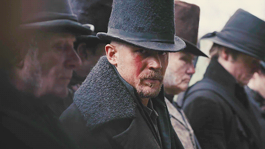

Tabu (2017)
Londyn, 1814 rok. Awanturnik oraz łowca przygód James Keziah Delaney (Tom Hardy) wraca do domu po 10 latach spędzonych w Afryce, z 14 nieuczciwie zdobytymi diamentami. Na miejscu odkrywa tajemniczą spuściznę po zmarłym ojcu i postanawia szukać zemsty za jego śmierć.
